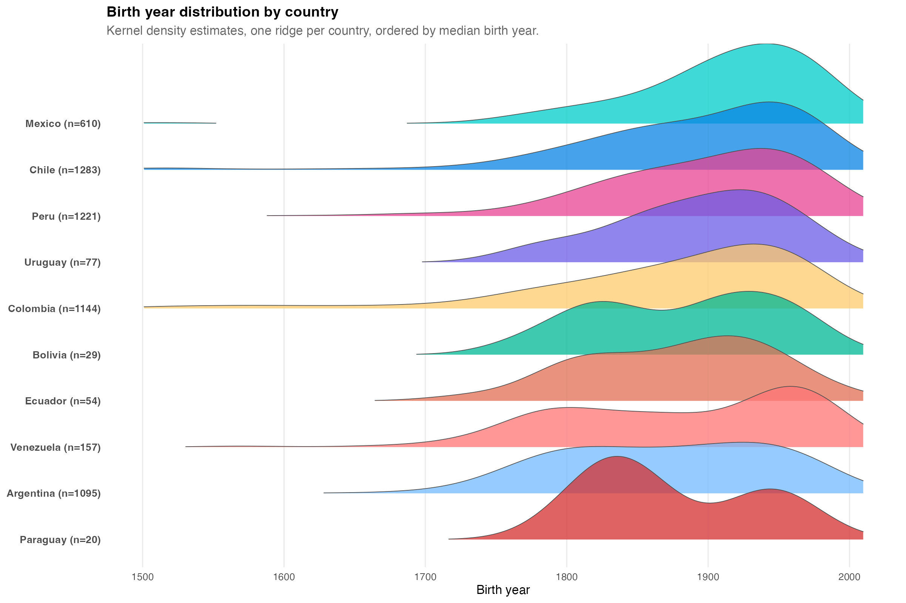
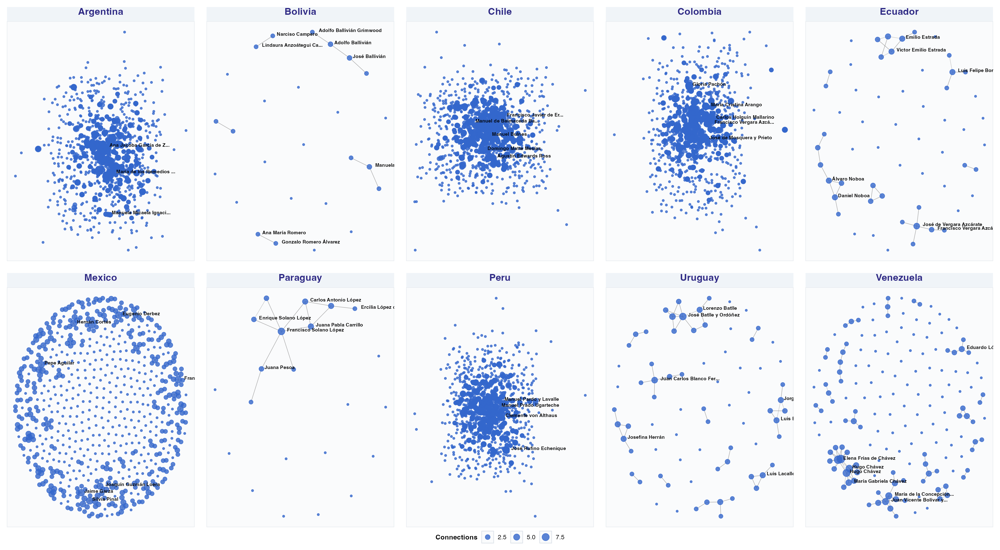
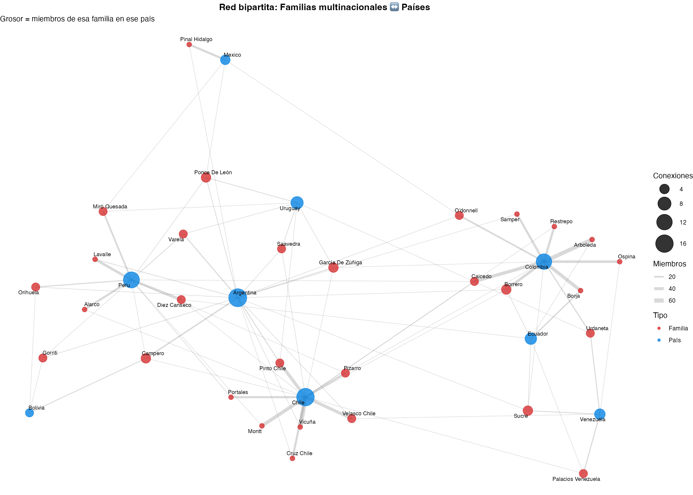
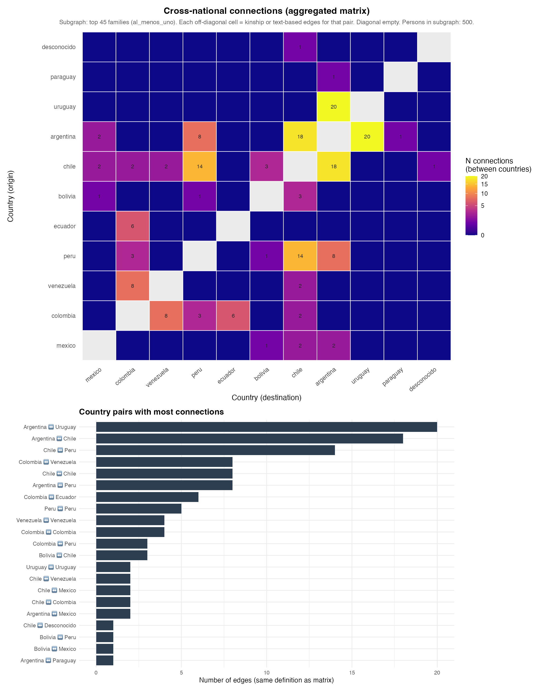
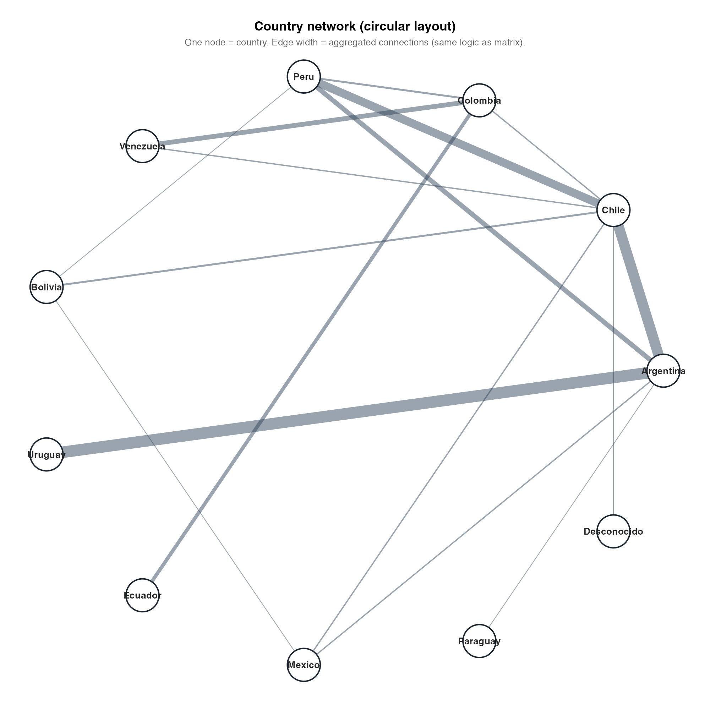
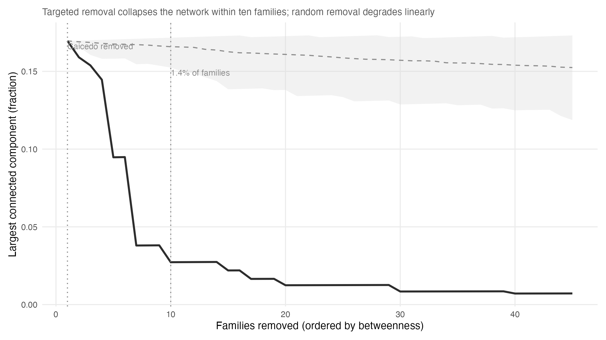
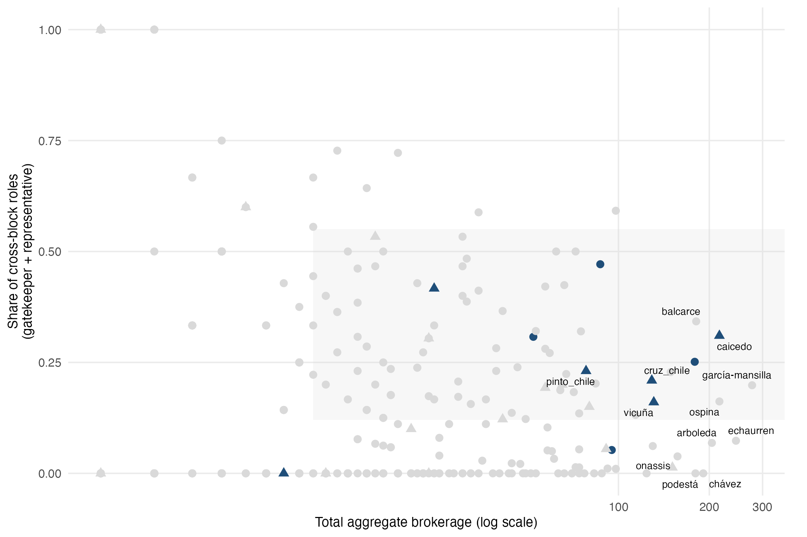

| Country | Individuals |
|---|---|
| chile | 1371 |
| colombia | 1333 |
| peru | 1296 |
| argentina | 1147 |
| mexico | 661 |
| venezuela | 170 |
| uruguay | 84 |
| ecuador | 56 |
| bolivia | 30 |
| paraguay | 21 |
Evidence from Wikipedia Genealogical Data, Nineteenth to Twenty-First Centuries
2026-04-20
Latin American political history has long been interpreted through the lens of oligarchy, caudillismo, and the intergenerational transmission of status (Mahoney, 2010; Centeno, 2002). Classical elite theory—from Pareto and Mosca through mid-twentieth-century political sociology—stressed circulation versus closure: whether ruling strata renew themselves through co-optation and alliance or seal themselves behind kinship and class barriers. Empirical adjudication at scale, however, has remained difficult. Systematic, comparable evidence on how elite families connect across countries and centuries is scarce because prosopographical reconstruction is labor-intensive and rarely harmonized across national archives.
Historical sociology and political sociology nevertheless offer rich idiographic traditions. Padgett and Ansell’s (1993) analysis of Florentine marriage and banking ties showed how multiplex network structure could sustain “robust action” under factional rivalry. Regional studies of Latin American familias notables documented marriage strategies linking land, office, and credit (Balmori, Voss, & Wortman, 1984). Scaling such insights to multiple republics typically required either intensive archival reconstruction or illustrative genealogies whose representativeness is uncertain.
Digital traces offer a complementary path. Spanish-language Wikipedia aggregates biographical entries produced by dispersed editors; kinship statements—spouses, parents, children, partners—are often included in infoboxes or narrative leads. These data are neither representative of whole populations nor free of bias: they disproportionately document literate, urban, politically and culturally visible individuals. Yet precisely that bias may approximate what successive generations of national publics chose to record about “notable” families—a documentary elite whose network properties are sociologically informative in their own right (Lazer et al., 2014). The task is therefore not to treat Wikipedia as a mirror of society, but as a large, public, and evolving archive whose internal structure can be analyzed.
This paper asks: How have elite family networks structured the reproduction of political power in Latin America from roughly the nineteenth through the twenty-first centuries? We articulate five hypotheses. H1–H4 examine observable network features: (i) the association between marriage closure and political concentration, (ii) the alignment between macro-scale graph topology and stylized regime types, (iii) the geography of transnational kinship ties, and (iv) the identification of brokerage positions via betweenness centrality. H5 introduces an integrative perspective: it evaluates whether these heterogeneous surface patterns are consistent with an underlying structural regularity—specifically, a core–periphery architecture that is historically consolidated (not atemporal) and geographically asymmetric (not pan-Latin-American), and that jointly produces both rigidity and fragility in the network.
Our contribution is threefold, but rests on a single organizing claim: family network structure is not merely a byproduct of political order in Latin America—it is one of the infrastructures through which that order is reproduced. Where elites built durable states, they did so by layering kinship closure onto institutional access; where states remained fragile or personalist, the configuration of kinship ties reflects—and potentially constrains—those outcomes. We do not claim causal identification. Rather, we show that network topology covaries systematically with regime characteristics across ten republics using a common corpus and comparable metrics—an empirical contribution that large-scale comparative prosopography has rarely achieved.
We organize the analysis around three conceptual distinctions. First, we distinguish closure from reach as alternative elite network strategies: families that maximize endogamy (closure) tend to sacrifice bridging ties, while those that expand across borders typically exhibit lower endogamy rates. This closure–reach trade-off is observable in degree–endogamy correlations and is theoretically grounded in the tension between Bourdieu’s (1996) reproductive closure and Granovetter’s (1973) structural holes.
A corollary of this trade-off is that no single family should simultaneously maximize both dimensions. However, under a core–periphery configuration, a small subset of families may approximate this dual position: they are embedded in a dense core (high closure at the block level) while also maintaining bridging roles across blocks (high reach at the graph level). We refer to this configuration as robust brokerage, following Padgett and Ansell (1993). H5 evaluates whether such families are empirically detectable, how frequent they are, and what structural role they occupy.
Second, we distinguish the documentary elite field—the subset of families that are consistently recorded and interlinked in public digital archives—from the broader social elite. This distinction is central: the documentary elite field is not a proxy for the entire elite, but a specific object of analysis whose boundaries and biases are themselves sociologically meaningful.
Third, we distinguish between surface heterogeneity and underlying structural regularity. While H1–H4 document substantial variation across countries in observable network features, H5 assesses whether these differences coexist with a common structural backbone. The aim is not to collapse heterogeneity into a single model, but to evaluate whether diverse configurations are compatible with a shared underlying architecture.
The remainder proceeds as follows. Section 2 reviews relevant literature, including core–periphery and robust-brokerage frameworks that motivate H5. Section 3 describes data construction, variables, and limitations—with summary statistics in Table 1 and related tables. Section 4 presents H1–H4 results. Section 4.6 presents the integrative H5 analysis, combining ERGM, homophily decomposition, stochastic block models, temporal cohort analysis, and targeted-attack simulations as complementary (though not independent) approaches to characterizing network structure. Section 5 discusses interpretation, scope conditions, and limitations, and concludes.
Classic scholarship on Latin America emphasized the familia notable as a unit linking land, urban property, marriage, and access to state office (Balmori et al., 1984). Centeno (2002) connected elite networks to war-making and the fiscal–military organization of republics, while Mahoney (2010) emphasized path dependence in colonial and postcolonial institutions. Together, these traditions imply testable expectations at the network level: family strategies—endogamy, strategic exogamy, and placement of kin in parties and ministries—should covary with the concentration of political access and the durability of elite coalitions over time.
Bourdieu’s (1996) analysis of the French state nobility provides a vocabulary for social reproduction: elites convert economic resources into social ties and cultural credentials, then reproduce privileged access to institutional positions across generations. Although Latin American contexts differ—through the roles of the Catholic Church, the military, export agriculture, and mining enclaves—the underlying problem of stabilizing advantage through kinship remains analogous. Where elites successfully restrict marriage markets, one expects measurable closure at the level of surname clusters (H1). Where political competition fragments access, closure may coexist with relatively dense but outward-oriented networks.
Historical network analysis demonstrates that macro-structure—chains, stars, dense cores, or disconnected fragments—can correspond to distinct modes of coordination and conflict (Padgett & Ansell, 1993). Granovetter (1973) motivated attention to weak ties and brokerage across clusters. Translating these ideas to Latin America requires caution: one may loosely associate linear dynastic chains with personalist or patrimonial consolidation (in Weberian terms), star-like graphs with legitimating “founding” lineages, dense webs with competitive oligarchies and multiple channels of access, and fragmented graphs with regionalized or weakly integrated elites. These mappings function as interpretive ideal-types, not as deterministic classifications inferred mechanically from graph metrics (H2).
Colonial geography—mining belts, highland–coastal corridors, and viceregal administrative centers—may channel later elite mobility and marriage patterns. Pacific Andean spaces, along with Chilean–Peruvian histories of war and diplomacy, plausibly leave residual structure in cross-border elite ties long after independence. If transnational edges in a Wikipedia-derived kinship graph concentrate along a Pacific–Andean corridor rather than dispersing uniformly, that pattern provides descriptive support for path-dependent geography (H3). Such evidence should be interpreted as consistent with historically informed priors, rather than as direct identification of colonial causal mechanisms.
Colonial and republican marriage regimes structured women’s roles as alliance partners and transmitters of property and status (Lavrin, 1990). If encyclopedic records disproportionately document women through ties to notable husbands and sons, degree in kinship-based graphs may overstate public or political centrality, while betweenness in multiplex projections remains comparatively lower. We treat such gendered divergences as hypothesis-generating patterns about brokerage and exclusion, rather than as definitive evidence of underlying mechanisms, given the limitations of name-based or archival proxies.
Beyond topological ideal-types, network scholarship has formalized structural configurations that are directly relevant to elite coordination. Core–periphery models (Borgatti & Everett, 2000) identify graphs in which a small, densely interconnected group is embedded within a larger, sparsely connected periphery, with intermediate tie density between them. Such architectures are consistent with elite systems in which a coordinating stratum maintains internal cohesion while sustaining selective outward connections. Detecting these patterns typically relies on unsupervised approaches such as stochastic block models (SBM), which infer block structure from observed tie distributions.
Robust brokerage, as developed by Padgett and Ansell (1993), refers to actors that are simultaneously embedded within a dense core and positioned to bridge across its boundaries. This dual position enables what they term robust action: the capacity to maintain flexibility across domains while preserving stability within them. Operationally, this configuration can be evaluated using the Gould and Fernandez (1989) typology of brokerage roles—coordinator, consultant, gatekeeper, representative, and liaison. Actors occupying robust brokerage positions are expected to exhibit relatively high shares of cross-block roles (e.g., gatekeeper, representative) alongside strong within-core embedding.
H5 evaluates whether the empirical patterns described in H1–H4 are consistent with such a structural configuration—namely, an asymmetric core–periphery architecture in which a limited number of families approximate this dual role. Rather than positing a single generative model, the aim is to assess whether multiple descriptive indicators converge on a common structural interpretation within the documentary elite field.
We scraped Spanish-language Wikipedia biographical pages for ten Latin American countries (Argentina, Bolivia, Chile, Colombia, Ecuador, Mexico, Paraguay, Peru, Uruguay, and Venezuela), following the project pipeline described in the replication repository. Raw extracts were consolidated and normalized into relational tables (personas, relaciones, partidos, educacion, sucesiones). Table 1 summarizes the distribution of retained individuals by pais_base after deduplication. The working person table contains 6,169 rows; 8,201 kinship relation rows link two identified individuals (persona_relacionada_id non-missing) out of 14,190 extracted rows, so 57.8% of raw kinship statements resolve to another scraped biography. 92.9% of persons have a parsed birth year (anio_nacimiento), which anchors descriptive temporal plots.
| Country | Individuals |
|---|---|
| chile | 1371 |
| colombia | 1333 |
| peru | 1296 |
| argentina | 1147 |
| mexico | 661 |
| venezuela | 170 |
| uruguay | 84 |
| ecuador | 56 |
| bolivia | 30 |
| paraguay | 21 |
Family is operationalized via familia_norm, a normalized surname cluster constructed through orthographic harmonization. This construct should be interpreted as a documentary grouping derived from Wikipedia conventions rather than as a validated genealogical lineage.
Country is assigned using nationality fields, infobox cues, and text-based inference, complemented by manual verification where ambiguity arises. A kinship edge is classified as transnational when the assigned countries of its endpoints differ. Both family and country variables are therefore subject to classification error inherent to the source.
We construct an undirected graph based on matched kinship relations and augment it with additional relational layers, including within-family ties for small lineages, predecessor–successor links, and affiliations derived from shared party membership and educational institutions. Together, these layers define a multiplex network used for centrality estimation and community detection.
Accordingly, degree and betweenness centrality are computed on the multiplex graph, whereas marriage-based endogamy measures rely exclusively on kinship edges. This distinction separates institutional connectivity from strictly genealogical closure.
Betweenness centrality in a kinship-only graph captures mediation along genealogical chains, an analytically narrow concept tied to parent–child and spousal links. The multiplex specification allows shortest paths to traverse institutional as well as familial relations—such as shared party affiliation, educational trajectories, and succession ties—thus approximating a broader infrastructure of elite coordination.
This specification does not imply that multiplex betweenness directly measures political influence; rather, it captures structural positioning within the observed relational system. By contrast, endogamy rates are computed exclusively on spouse and partner ties, preserving a strictly matrimonial definition of closure.
Network measures are computed with igraph, including degree, betweenness centrality, PageRank, local clustering coefficient, and community structure via modularity optimization. Additional aggregate indicators are constructed as follows:
familia_norm.All analyses are observational. Network measures describe co-occurrence patterns within a digital corpus shaped by notability and editorial practices. Throughout Section 4, we adopt a descriptively cautious language (e.g., “associated with,” “consistent with,” “suggestive”) to avoid causal over-interpretation.
Biographical dates span approximately 1800–2000, with some colonial antecedents. Unless explicitly disaggregated, network representations pool multiple historical periods, implying that observed structures combine relationships formed under different institutional contexts.
These limitations position the analysis as a structured mapping of a documentary elite field, rather than a comprehensive representation of Latin American elites. They also motivate the interpretive discipline maintained in Section 4 and Section 5.
We organize the results by hypothesis. Summary statistics for marriage closure and institutional concentration by country appear in Table 2 and Table 3. Cross-border structure is documented in Table 4 and Table 5. Figure 1 situates the temporal distribution of births used throughout. National kinship layouts appear in Figure 2; transnational summaries follow in Figure 3, Figure 4, Figure 5, and Figure 6.

| Country | Marriages | Endogamous | Endogamy rate | Transnational marriages | Transnational rate |
|---|---|---|---|---|---|
| Paraguay | 4 | 4 | 1.000 | 0 | 0.000 |
| Ecuador | 10 | 9 | 0.900 | 2 | 0.200 |
| Mexico | 108 | 94 | 0.870 | 15 | 0.139 |
| Argentina | 177 | 153 | 0.864 | 36 | 0.203 |
| Venezuela | 25 | 21 | 0.840 | 5 | 0.200 |
| Chile | 251 | 210 | 0.837 | 23 | 0.092 |
| Colombia | 151 | 120 | 0.795 | 13 | 0.086 |
| Uruguay | 18 | 14 | 0.778 | 7 | 0.389 |
| Peru | 104 | 80 | 0.769 | 12 | 0.115 |
| Bolivia | 3 | 2 | 0.667 | 2 | 0.667 |
| Country | Families (n) | Median party conc. | Median office conc. | Corr(degree, closure) | Corr(betweenness, closure) |
|---|---|---|---|---|---|
| Argentina | 165 | 0.500 | 0.500 | -0.738 | -0.236 |
| Bolivia | 4 | 0.417 | 0.550 | — | — |
| Chile | 98 | 0.375 | 0.529 | -0.536 | -0.330 |
| Colombia | 147 | 0.667 | 0.556 | -0.478 | -0.073 |
| Ecuador | 6 | 0.700 | 0.472 | — | — |
| Mexico | 111 | 0.667 | 0.667 | -0.797 | -0.440 |
| Paraguay | 1 | — | 1.000 | — | — |
| Peru | 182 | 0.500 | 0.571 | -0.720 | -0.122 |
| Uruguay | 9 | 0.833 | 0.615 | — | — |
| Venezuela | 20 | 0.500 | 0.625 | -0.764 | -0.344 |
| Note. Correlations are not reported for countries with fewer than 10 families |
Endogamy rates vary markedly across countries (Table 2). Among the larger republics, kinship-based endogamy rates cluster roughly between 0.77 and 0.87, while Paraguay reaches 1.00 on a very small number of observed marriages (4). Bolivia shows the lowest endogamy rate in the table (0.67) alongside a high transnational marriage share (0.67), a pattern that likely reflects both small sample size and corpus boundary effects. Table 3 reports family counts by country (e.g., Argentina 165, Peru 182, Mexico 111, Chile 98) together with descriptive correlations between family-level closure and two network indicators: genealogical degree and multiplex betweenness. Cells marked “—” indicate estimates not reported because of insufficient numbers of families.
At the country level, Corr(degree, closure) is negative wherever it is defined in Table 3, and substantively large in several major republics: Mexico −0.797, Venezuela −0.764, Argentina −0.738, Peru −0.720, Chile −0.536, and Colombia −0.478. One observational reading—consistent with competitive-oligarchy narratives and with Padgett and Ansell’s (1993) account of robust action—is that families maintaining broad network reach may do so partly by forgoing high levels of matrimonial closure. Larger and more connected lineages may therefore face a trade-off between preserving closure within the surname cluster and sustaining broader alliance networks. Smaller or less central families, by contrast, may maintain higher closure without sacrificing as much documented connectivity.
Read through Bourdieu’s vocabulary of capital conversion, brokerage across families and institutions and closure within the surname cluster appear here not as mechanically complementary dimensions, but as partly competing strategies of elite reproduction. The pattern remains descriptive: it identifies a regularity in the documentary corpus rather than a causal mechanism.
Corr(betweenness, closure) is more modest in magnitude than Corr(degree, closure) in every country where both are defined—for example Argentina −0.236, Mexico −0.440, Chile −0.330, Venezuela −0.344, Peru −0.122, and Colombia −0.073 (Table 3). This suggests that structural brokerage in the multiplex graph is less tightly organized around matrimonial closure than raw genealogical degree is. The pattern is consistent with shortest paths that traverse institutional layers—party affiliation, educational trajectories, and succession ties—that need not align with endogamy rates computed on spouse and partner edges alone.
This distinction matters substantively. It suggests that two classic mechanisms of elite reproduction—marriage strategy and institutional placement—may operate with partial independence. Families can remain relatively closed in matrimonial terms while some of their members still occupy brokerage positions in institutional space, and vice versa. In that sense, H1 receives partial descriptive support: closure and institutional concentration co-vary in informative ways, but the association is neither uniform across countries nor sufficient on its own to imply a single model of elite reproduction.

The country-level layouts in Figure 2 suggest recurrent but heterogeneous topological patterns. Paraguay appears close to a linear chain centered on the López dynasty, evocative of patrimonial consolidation. Chile and Peru display more hub-centered configurations, with prominent nodes connecting multiple branches. Argentina, Colombia, and Mexico show denser webs with several high-degree families, while Bolivia, Venezuela, and Ecuador appear more fragmented into smaller cohesive clusters.
These associations are interpretive rather than algorithmic. The argument is not that graph shape mechanically encodes regime type, but that certain recurrent forms are broadly consistent with stylized historical narratives of personalist consolidation, oligarchic competition, or weakly integrated elite fields. Figure 2 therefore supports H2 at the level of ideal-typical analogy, not predictive classification.

| From → To | Kinship | Biographical | Total |
|---|---|---|---|
| chile → peru | 36 | 81 | 117 |
| argentina → uruguay | 46 | 59 | 105 |
| argentina → chile | 56 | 38 | 94 |
| argentina → peru | 31 | 59 | 90 |
| argentina → colombia | 30 | 27 | 57 |
| chile → colombia | 43 | 14 | 57 |
| colombia → peru | 23 | 28 | 51 |
| colombia → venezuela | 37 | 11 | 48 |
| chile → mexico | 17 | 27 | 44 |
| argentina → mexico | 19 | 7 | 26 |
| argentina → bolivia | 12 | 13 | 25 |
| colombia → ecuador | 13 | 9 | 22 |
| colombia → mexico | 12 | 7 | 19 |
| mexico → peru | 6 | 9 | 15 |
| argentina → paraguay | 7 | 5 | 12 |
| Family | Countries | Members | Country list |
|---|---|---|---|
| Borrero | 4 | 39 | argentina, chile, colombia, ecuador |
| Campero | 4 | 24 | argentina, bolivia, chile, peru |
| Ponce De León | 4 | 12 | argentina, mexico, peru, uruguay |
| García De Zúñiga | 4 | 11 | argentina, chile, colombia, uruguay |
| Sucre | 4 | 11 | argentina, colombia, ecuador, venezuela |
| Pinto Chile | 3 | 50 | argentina, chile, uruguay |
| Caicedo | 3 | 48 | chile, colombia, peru |
| Velasco Chile | 3 | 44 | argentina, chile, venezuela |
| Diez Canseco | 3 | 33 | chile, ecuador, peru |
| Pizarro | 3 | 33 | chile, colombia, peru |
| Miró Quesada | 3 | 22 | mexico, peru, uruguay |
| O'donnell | 3 | 22 | argentina, colombia, mexico |


Aggregated weights rank Chile–Peru first (117 total counted events), followed by Argentina–Uruguay (105), Argentina–Chile (94), and Argentina–Peru (90) (Table 4; Figure 3; Figure 4; Figure 5; Figure 6). Atlantic-oriented pairs such as Argentina–Brazil are absent from the top of this list in the current aggregation.
The decomposition into kinship versus biographical counts matters theoretically. Chile–Peru combines 36 kinship and 81 biographical events—roughly 31% kinship and 69% biographical—so the strongest dyad in the table is driven primarily by biographical co-mention rather than by cross-border genealogy alone. By contrast, Argentina–Chile shows the reverse balance: 56 kinship and 38 biographical events, making it the most genealogically entangled pair among the top ranks. Argentina–Uruguay is more mixed (46 versus 59), consistent with a dense Rioplatense elite field in which family and professional circulation are both heavily documented. These contrasts are descriptive: kinship-heavy pairs indicate actual cross-border family linkage in the observed graph, whereas biographical-heavy pairs capture transnational circulation that may or may not coincide with kinship.
Historical narratives are suggestive rather than identified here. The former Viceroyalty of Peru linked Chilean and Peruvian territories administratively, while the War of the Pacific (1879–84) plausibly intensified biographical cross-referencing between Chilean and Peruvian entries. Argentina–Chile is consistent with long-standing Andean–Southern Cone mobility, including nineteenth-century political exile, while Argentina–Uruguay fits a broader River Plate elite field. The absence of a strong Argentina–Brazil edge—despite the scale and proximity of both countries—is consistent with the idea that documentary elite ties are shaped more strongly by administrative corridors and historical circuits than by proximity alone.
At the family level, Table 5 highlights lineages such as Borrero (39 members across four countries: Argentina, Chile, Colombia, Ecuador), Campero (24 members; Argentina, Bolivia, Chile, Peru), and Sucre (11 members; Argentina, Colombia, Ecuador, Venezuela). Their geographic footprints are consistent with post-independence elite continuity across Bolivarian and Gran-Colombian spaces, though again this should be read as interpretive alignment rather than causal proof.
The Pacific-corridor pattern is not self-explanatory. At least three mechanisms are compatible with it. At the colonial scale, viceregal administration linked legal institutions, ecclesiastical hierarchies, and commercial circuits across Pacific-Andean territories. At the republican scale, warfare, diplomacy, and exile may have intensified biographical entanglement independently of genealogy. At the demographic scale, highland urban centers such as Lima, Santiago, La Paz, and Bogotá may have constituted relatively integrated marriage markets among literate notables.
None of these mechanisms is identified here. Each remains a hypothesis for future cohort-level analysis, archival validation, or quasi- experimental designs. Even so, H3 receives descriptive support for a Pacific–Andean and Southern Cone emphasis in this documentary corpus, with the crucial caveat that biographical layers inflate some dyads relative to kinship and that mechanisms remain open.
| Name | Family | Country | Degree | Betweenness |
|---|---|---|---|---|
| Luis Felipe Villarán | villarán | Peru | 410 | 517,714 |
| Walter Humala | humala | Peru | 557 | 473,134 |
| Luis Jaime Cisneros | cisneros | Peru | 364 | 391,641 |
| José Evaristo Uriburu | álvarez de arenales | Argentina | 398 | 328,970 |
| Pastor Obligado | obligado | Argentina | 324 | 267,974 |
| Guido Di Tella | di tella | Argentina | 276 | 240,510 |
| Patrocinio González Garrido | ortiz mena | Mexico | 194 | 212,889 |
| Francisco Uriburu (hijo) | uriburu | Argentina | 313 | 208,067 |
| Cuauhtémoc Cárdenas | cárdenas | Mexico | 266 | 198,005 |
| Demetrio Sodi de la Tijera | sodi | Mexico | 169 | 188,638 |
| Roque Sáenz Peña | sáenz peña | Argentina | 263 | 168,155 |
| Guillermo Fernández de Soto | camacho | Colombia | 219 | 163,071 |
| Jaime Arrubla Paucar | arrubla | Colombia | 172 | 146,224 |
| Rafael Roncagliolo | orbegoso | Peru | 235 | 144,958 |
| Tomás Lander | lander | Venezuela | 177 | 144,923 |
High betweenness is concentrated among a relatively small set of individuals (Table 6), including Luis Felipe Villarán and Walter Humala in Peru, José Evaristo Uriburu in Argentina, and Cuauhtémoc Cárdenas in Mexico. In that limited sense, H4 is descriptively supported: brokerage positions are clearly identifiable within the augmented graph. We do not equate betweenness with real-world political influence outside the documented network.
The concentration of top betweenness scores among Peruvian and Argentine figures invites a structural reading. Peru’s prominence in the ranking is consistent with Lima’s historical role as a hub linking Andean, coastal, and institutional circuits. Likewise, Argentina’s high-betweenness cluster—Uriburu, Obligado, Di Tella, Sáenz Peña—is consistent with the dense layering of kinship, party, and educational ties often associated with the oligarchic “Generation of 1880.”
These interpretations should remain cautious. High betweenness in the multiplex graph reflects structural location within the observed relational system, not intrinsic influence or historically verified brokerage in every case. Still, the distribution is consistent with the claim that some individuals occupy positions that bridge otherwise separated institutional and genealogical domains.
The infobox pipeline does not encode sex, so any gendered pattern must be treated as exploratory. Table 7 applies a deliberately crude first-name heuristic to individuals with positive degree. For Argentina and Colombia—the two largest samples—mean degree is similar across groups, while mean betweenness is lower for the feminine-coded group in Colombia and nearly identical in Argentina. The pattern underscores both subnational heterogeneity and the limits of name-based inference.
| Country | Gender group | n | Mean degree | Mean betweenness |
|---|---|---|---|---|
| Argentina | F (heuristic) | 42 | 20.1 | 2124 |
| Argentina | M (heuristic) | 1045 | 40.3 | 6935 |
| Colombia | F (heuristic) | 50 | 24.3 | 971 |
| Colombia | M (heuristic) | 1073 | 67.8 | 6770 |
Interpretively, where degree in kinship projections is relatively high but betweenness in the multiplex graph is not, the pattern is consistent with women’s documented role as connectors in genealogical fields without equivalent placement on shortest paths that also traverse parties and universities. That reading aligns, at a broad level, with Lavrin’s emphasis on marriage as alliance and with Bourdieu’s distinction among forms of capital: genealogical visibility need not translate into institutional brokerage. Still, any stronger claim would require validated gender coding. The present discussion therefore remains hypothesis-generating only.
H1–H4 document observable properties of the elite network—closure, topology, transnational corridors, and brokerage. H5 evaluates whether these patterns are consistent with a deeper structural organization. Specifically, we assess whether the network exhibits a core–periphery architecture that is historically consolidated and structurally fragile. The analysis integrates multiple complementary approaches that converge on a common interpretation.
| Term | Estimate | Std. error | Odds ratio | p-value |
|---|---|---|---|---|
| edges | -8.776 | 0.160 | 0.000 | < 1e-300 |
| nodecov.n_members | 0.056 | 0.002 | 1.057 | 2.5e-115 |
| nodematch.pais | 1.781 | 0.134 | 5.937 | 2.4e-40 |
| absdiff.mean_degree | -0.352 | 0.117 | 0.703 | 0.0025 |
The network is extremely sparse at baseline, indicating that kinship ties are rare relative to the number of possible family pairs. At the same time, tie formation is strongly structured. Connections are substantially more likely within countries than across them, indicating robust national homophily operating alongside the transnational corridors documented in H3.
Family size also contributes to tie formation: larger lineages tend to accumulate more connections, suggesting a mild preferential attachment process. At the same time, ties are less likely between families with very different levels of connectivity, indicating stratification by network position. Taken together, these patterns describe a system that is both sparse and strongly sorted.
| Attribute | H (observed) | H (expected) | Within-share | p-value |
|---|---|---|---|---|
| Country | 0.479 | 0.189 | 0.578 | <1e-300 |
| PoliticalOffice | -0.855 | 0.879 | 0.776 | <1e-300 |
| NetworkTier | 1.000 | 0.545 | 1.000 | <1e-300 |
| Era | 0.234 | 0.505 | 0.621 | <1e-300 |
Sorting operates differently across attributes. Structural position shows near-perfect homophily: families tend to connect to others with similar levels of connectivity. Country exhibits substantial but incomplete homophily, while temporal proximity plays a weaker role.
By contrast, political roles display strong heterophily. Families do not primarily connect to others occupying the same institutional position; instead, ties are more common across roles. This pattern is consistent with functional complementarity: elite families specialize in different institutional domains while remaining embedded within the same structural and national fields.
| Block pair | Tie probability |
|---|---|
| B1 -> B1 | 6.6e-04 |
| B1 -> B2 | 2.0e-03 |
| B2 -> B1 | 2.0e-03 |
| B2 -> B2 | 1.4e-01 |
The SBM, applied without supervision, selects K = 2 blocks (ICL-minimum). The two blocks are radically asymmetric: Block 1 contains 722 families with an internal tie probability of 0.00066, while Block 2 contains 21 families with an internal tie probability of 0.138 — a ratio of roughly 208 to 1 (Table 10). Between-block ties occur at an intermediate rate (π12 = 0.0020) that is three times higher than within the periphery but roughly seventy times lower than within the core. The model does not detect two rival coalitions; it detects a core–periphery structure in which a small, densely interconnected group sits above a much larger, sparsely connected field.
The twenty-one families of the core are geographically concentrated: sixteen are Chilean, four are Colombian (Acevedo, Caicedo, Eder, Obregón), and one is Mexican (Pinal Hidalgo). No families from Argentina, Peru, Mexico (except Pinal Hidalgo), Venezuela, or the smaller republics enter the core. This is striking given that Peru contributes the largest national sub-corpus (185 families) and Argentina the second-largest (161). Sub-corpus size does not predict core membership; structural position in the kinship graph does.
| Cohort | Edges | Density | Cross-family share | Cross-country share | Gini (degree) |
|---|---|---|---|---|---|
| Colonial (pre-1800) | 1658 | 2.4e-03 | 0.177 | 0.086 | 0.338 |
| Independence (1800-1850) | 1714 | 2.0e-03 | 0.099 | 0.042 | 0.306 |
| Oligarchic (1850-1900) | 1556 | 1.8e-03 | 0.067 | 0.030 | 0.269 |
| Republican (1900-1950) | 2366 | 1.3e-03 | 0.055 | 0.043 | 0.283 |
| Modern (1950-2000) | 868 | 3.0e-03 | 0.053 | 0.047 | 0.251 |
The core–periphery architecture is not atemporal. Splitting the graph by birth cohort (Table 11) reveals a monotonic decline in the share of ties that cross family boundaries: 17.7% in the Colonial cohort (pre-1800) falls to 9.9% at Independence (1800–1850), 6.7% in the Oligarchic period (1850–1900), 5.5% in the Republican era (1900–1950), and 5.3% in the Modern cohort (1950–2000) — a 70% decline across five successive cohorts. The decline is not driven by a collapse in edge count: edge volume increases from 1,658 (Colonial) to 2,366 (Republican) before falling in the Modern period.
This conjunction — rising edge volume with falling cross-family share — is the signature of oligarchic consolidation. The network does not become smaller; it becomes more self-referential. Colonial elite networks spread ties across many lineages at low density; nineteenth- and early-twentieth-century networks concentrated a growing volume of ties within fewer lineages. The pattern is consistent with Centeno’s (2002) thesis that the Latin American nineteenth century produced not strong states with autonomous bureaucracies but oligarchic states in which kinship intensification substituted for fiscal-military institution-building. The cross-country share shows a related but distinct trajectory: declining from 8.6% (Colonial) to 3.0% (Oligarchic), then partially recovering to 4.7% (Modern), consistent with twentieth-century transnational re-integration of elites through diplomacy, business, and migration.

Figure 7 contrasts targeted removal (ordered by betweenness-based criticality) with random removal: the targeted trajectory collapses the largest connected component after very few deletions, whereas random removal produces a nearly linear decline.
Targeted removal of highly central families produces rapid network fragmentation, in contrast to the gradual degradation observed under random removal. A very small number of removals is sufficient to collapse the largest connected component.
Families identified as structurally critical in this exercise overlap substantially with those in the dense core, indicating convergence between latent structure and network robustness. The core is therefore not only dense but also functionally central to connectivity.
| Block | Coord. | Consult. | Gatekeep. | Repr. | Liaison | Total / family | Cross-block % |
|---|---|---|---|---|---|---|---|
| Periphery (B1, n=722) | 6987 | 407 | 656 | 542 | 72 | 12.0 | 13.8 |
| Core (B2, n=21) | 917 | 36 | 132 | 80 | 13 | 56.1 | 18.0 |
Brokerage is unevenly distributed. In absolute terms, most brokerage occurs in the periphery due to its size. When normalized by group size, however, core families exhibit substantially higher brokerage intensity.
This produces a structural tension. The core is internally cohesive but relies on connections to the periphery for broader reach, while the periphery carries much of the bridging load without equivalent internal density. Neither layer alone sustains the system.
The structural tension identified in the brokerage subsection above has an empirical resolution in a small set of families that occupy the core, carry substantial brokerage load, and appear among the critical removal targets. Operationalizing “robust brokers” by the intersection of three criteria — SBM core membership, top-decile aggregate brokerage, and inclusion in the top thirty critical removal targets — returns four families: Caicedo (Colombia), and Cruz, Pinto, and Vicuña (Chile). These four are the only families in the corpus that combine dense embedding in the elite core with extensive bridging to the periphery (Figure 8).
The typological reading follows Padgett and Ansell’s (1993) analysis of Medici robustness. In their account, Medici dominance in Renaissance Florence was not a matter of being the most connected family (they were not) but of being densely embedded in a cohesive core while simultaneously brokering across factions. That dual position generated robust action: the capacity to act decisively in one domain without compromising flexibility in another. Caicedo, Cruz, Pinto, and Vicuña occupy the same structural position in the Latin American kinship graph. Their brokerage role profile confirms the typological match: across these four families, gatekeeper and representative roles (brokerage across block boundaries) account for roughly 23% of aggregate brokerage, against roughly 11% for a contrast class of high-brokerage peripheral families (García-Mansilla, Echaurren, Ospina, Arboleda, Chávez, Balcarce, Podestá, Onassis). Caicedo-type families broker between blocks at approximately twice the rate of peripheral brokers, who predominantly coordinate within the periphery.
The contrast class matters substantively. García-Mansilla (Argentina), Echaurren (Chile), and Ospina (Colombia) have higher absolute brokerage totals than Caicedo or Pinto, but they sit outside the structural core. They are dense local coordinators — presidents’ brothers and cousins, ministerial networks, provincial elites — whose removal does not fragment the graph because their ties are redundant within their own block. The Medici-like families combine scarcer structural position with rarer role diversity; the counter-cases combine denser local embedding with narrower role specialization.
The finding that three of the four robust brokers are Chilean is consistent with the national composition of the SBM core (16 of 21 core families are Chilean) and with the negative degree–closure correlation documented under H1 (Corr = −0.536 for Chile, the least negative among large republics — reflecting that Chilean core families are both high-degree and moderately endogamous, unlike Mexican or Argentine cases where very high degree accompanies very low endogamy). Caicedo’s Colombian exceptionalism in this set is worth flagging as a direction for archival follow-up: if the Caicedos of the Cauca Valley occupy a structurally Medici-like position in a polity that otherwise lacks a Chilean-style core, that is either a finding about Caicedo or a finding about Colombia, and only archival work can distinguish the two.

| Analysis | Diagnostic | Finding | Corroborated by |
|---|---|---|---|
| ERGM | nodematch.pais = 1.78 (OR 5.94) | Sparse but sorted tie formation | Homophily H(Country) = 0.48 |
| Homophily | H(Tier) = 1.00; H(Office) = -0.86 | Tier closure + functional complementarity | ERGM absdiff.mean_degree < 0 |
| SBM | K = 2; pi_22 / pi_11 = 208 | Core-periphery: 21 vs 722 families | Attack: 6 of top 10 are core |
| Temporal | Cross-family share: -70% across 5 cohorts | Monotonic oligarchic consolidation | Cross-country share also falls |
| Attack | LCC to 17% after 1 removal | Fragility to targeted removal | SBM core membership |
| Brokerage | Cross-block share: core 23%, periphery 11% | Four Medici-like robust brokers | A3 core + A6 top decile + A10 |
No single analysis is decisive on its own. The contribution of H5 lies in the convergence across approaches. The combined evidence is consistent with a sparse but strongly structured network organized around a core–periphery architecture that is historically consolidated and structurally vulnerable.
H5 receives strong descriptive support based on the agreement across independent indicators.
Our results are consistent with a heterogeneous Latin America: elite kinship structures are not isomorphic across countries. Contrasting chain-like configurations in Paraguay with dense or multi-hub structures in Mexico, Colombia, or Argentina aligns with institutionalist accounts of divergent state formation. These differences emerge even when all cases are measured through a single digital corpus, suggesting that the variation reflects underlying historical processes rather than purely methodological artifacts.
H5 raises a finding that the heterogeneity frame does not fully accommodate: sixteen of the twenty-one families in the SBM core, and three of the four robust brokers, are Chilean. This is not a minor imbalance. Chile contributes 99 families to the corpus — fewer than Argentina (161), Peru (185), or Colombia (146) — yet dominates the structurally central positions. The pattern is not reducible to sub-corpus size; if anything, the opposite holds.
Two readings are available, and we do not adjudicate between them here.
As a structural fact. Chilean elite continuity across the Portalian, Parliamentary, Popular Front, and early neoliberal regimes is a standing puzzle in Latin American political sociology. Zeitlin (1984), Stabili (1996), and Valenzuela and Valenzuela (1976) variously attribute this continuity to (i) a restricted electoral regime from 1833 to the 1920s that insulated elite marriage markets from mass politics, (ii) the absence of a successful land reform until 1967 that preserved hacendado lineages, and (iii) Santiago’s unusual demographic dominance within Chile, concentrating the marriage market geographically in ways that Buenos Aires, Lima, or Mexico City — each rivaled by strong regional capitals — did not. The SBM core is consistent with these accounts: it identifies precisely the structural signature (densely interconnected small group, peripheral brokerage layer) that a closed Santiago elite would produce.
As a sampling artifact. Spanish-language Wikipedia editorial practices vary across countries. If Chilean editors are disproportionately attentive to genealogical detail — recording spouses, parents, and children more consistently than Peruvian or Argentine editors — then Chilean families would appear more densely linked not because they are more densely linked, but because their links are more completely documented. The ratio of matched to total kinship rows (57.8%, Section 3) is a global figure; country-level variation in this ratio would partially test the artifact hypothesis.
The two readings are not mutually exclusive, and both generate testable predictions that the next iteration of this project should pursue: country-specific edge-matching rates, archival cross-validation of core-family genealogies, and comparison against non-Wikipedia elite registers (where available) for Chile, Colombia, and one contrast country.
The Pacific–Andean emphasis in cross-border weights (Table 4; Figure 5) is not reducible to geographic proximity alone. Bolivia and Ecuador are proximate to several large republics yet do not dominate the top dyads in this corpus; the pattern therefore aligns more closely with historical administrative and biographical pathways than with a simple distance-decay model. Viceregal structures once centered on Lima linked Andean and coastal spaces into a common political field; the War of the Pacific (1879–84) further entangled Chilean and Peruvian elites through conflict, exile, and subsequent documentation in biographical fields.
The kinship/biographical decomposition matters here. For Chile–Peru, 69% of counted events are biographical (81 of 117) and 31% kinship (36 of 117), which may partly reflect Chilean encyclopedic attention to Peruvian figures and exiles after 1879, not only cross-border genealogy. By contrast, Argentina–Chile is predominantly kinship-weighted (60% kinship, 40% biographical on 94 events), consistent with denser genealogical entanglement including documented migration and political exile corridors. Argentina–Uruguay is mixed (44% kinship, 56% biographical on 105 events), consistent with a shared Rioplatense cultural field in which family and professional circulation are both visible. The three pairs thus carry three different relational signatures, even though they rank close together on total weight.
The absence of Argentina–Brazil among the strongest pairs is the strongest implicit test available for the administrative-corridor hypothesis: if geographic proximity alone drove the pattern, the two largest adjacent economies should dominate the matrix. They do not. This pattern is consistent with colonial administrative legacies and Rioplatense cultural circuits structuring elite ties more than uniform neighborhood effects across Latin America — an empirical regularity that future comparative work on Brazilian elite networks (using Portuguese-language sources) could extend or challenge.
H5’s temporal analysis (Table 11) documents a monotonic 70% decline in the cross-family tie share from the Colonial cohort to the Modern cohort, coinciding with rising total edge volume through the Republican period. This conjunction — more ties, fewer lineages — is the empirical signature of oligarchic consolidation, and it occurs during the period Centeno (2002) identifies as the formative century of the Latin American state (roughly 1820–1920). Centeno’s argument is that Latin American republics did not undergo the fiscal-military transformation that Tilly (1990) and others associate with European state formation, because they did not fight the mass wars that forced such transformations in Europe. Instead, Centeno argues, they produced “states without wars”: administrative structures sustained not by centralized fiscal capacity but by elite network coordination.
The present data do not test Centeno’s mechanism directly. What they show is consistent with its structural prediction: if Latin American states consolidated through kinship intensification rather than bureaucratic institution-building, the network signature should be precisely the pattern we observe — rising edge volume in the state-building cohorts, concentrated within a shrinking set of structurally dominant lineages, producing a core–periphery architecture by the end of the consolidation period. Whether this structural signature caused the institutional weakness Centeno describes, or merely accompanied it, is a question for designs that exploit variation in the timing of elite consolidation across countries — another priority for cohort-level follow-up work.
Four alternative explanations warrant treatment before the observed patterns can be read as informative.
Wikipedia visibility bias is the most serious. If some families are documented in Wikipedia simply because they are more famous — rather than because they are more networked — then high degree could reflect celebrity rather than structural position. Two observations partially mitigate this concern. First, the negative correlation between degree and endogamy (H1) would not follow from a pure visibility story: celebrity families are not systematically more exogamous than obscure ones. Second, the topological variation across countries — chain in Paraguay, star in Chile, web in Argentina — is not reducible to differential Wikipedia coverage, since all countries are drawn from the same Spanish-language corpus under comparable extraction rules. Visibility bias would inflate all graphs equally; it cannot explain differential topology.
Demographic structure offers a second alternative: countries with larger populations should produce denser networks simply by having more nodes. Mexico and Argentina are the most populous countries in the corpus and do show dense webs — but Chile, with fewer than half Mexico’s population, also shows a dense star structure, while Bolivia and Ecuador, with smaller corpora, show fragmentation rather than simple sparsity. The topology classification is not monotonically predicted by corpus size. Paraguay’s linear chain emerges from the smallest national corpus (n = 21), which is consistent with patrimonial consolidation rather than with any density artifact.
Random network formation is the null hypothesis that H1–H4 treat interpretively but H5 tests formally. The ERGM in Table 8 rejects an edges-only baseline with high confidence: nodematch.pais p < 10−40 and nodecov.n_members p < 10−115 under MCMC maximum likelihood estimation. The observed sorting by country and lineage size is not produced by sparse random graphs with the same edge count. An Erdős–Rényi random graph with the same degree sequence as the Chilean subgraph would not produce a star topology; star formation requires a generative process (preferential attachment, or a founding lineage with historically higher documentation probability) that is itself non-random. Configuration-model baselines for the SBM partition — not estimated here — would further strengthen the core–periphery claim and remain priority work for a follow-up paper.
Core–periphery as random clustering. Any sparse graph will exhibit some unevenness in density. The question is whether the SBM’s detected core is statistically distinguishable from what a null model would produce. Two facts argue that it is. First, the within-core tie probability (0.138) is three orders of magnitude above the periphery’s within-block probability (0.00066) and two orders of magnitude above the cross-block probability (0.0020). Structural equivalence at this scale is not produced by sparse random graphs with the observed edge count. Second, the convergence between SBM core membership and attack-simulation criticality — six of ten critical families are core members — is not predicted by any null model that treats the blocks as interchangeable. Together these facts make the core–periphery structure a fact about the graph, not an artifact of the detection method.
Reframing Wikipedia as an archive of collective documentation clarifies the epistemic status of this study: we analyze who is repeatedly named and linked in a public archive — not the full elite stratum of each society. This reframing is more than a caveat. It converts the sample-selection problem into a substantive object: the documentary elite field is what we study, and its boundaries are themselves sociologically informative. Who gets inscribed in Wikipedia — and who does not — reflects decisions made by dispersed editors over two decades, shaped by language, political orientation, media coverage, academic attention, and family memory. The documentary elite field is therefore not a proxy for the social elite; it is a distinct object whose structure (as documented here) bears systematic relation to the social elite but is not identical with it.
This move aligns with computational social science cautions about digital trace data (Lazer et al., 2014) and with calls for transparency in algorithm-assisted history.
Although the data are publicly available, aggregate reporting should avoid unnecessary emphasis on identifiable living individuals. Interpretation should prioritize structural patterns over individual exposure.
The observational design of this study precludes causal inference, but the data infrastructure supports at least three identification gestures that future work could pursue.
Cohort analysis. The corpus contains birth years for 92.9% of individuals. Slicing the network by birth decade (e.g., 1800–1829, 1830–1859, …) would allow testing whether the closure–reach trade-off (H1) intensified during periods of state consolidation and relaxed during revolutionary disruptions. If endogamy rates rose in Chile in the decades following the 1833 Constitution and fell after the 1891 Civil War, that would be consistent with the institutional mechanism proposed under H1 — and inconsistent with a purely demographic explanation.
The War of the Pacific as a natural experiment. The 1879–84 conflict introduced an exogenous shock to Chilean–Peruvian elite relations: diplomatic expulsion, property confiscation, and forced migration disrupted pre-war kinship networks while simultaneously generating new biographical cross-referencing through military records, exile accounts, and peace negotiations. A difference-in-differences design comparing Chile–Peru cross-border kinship edges (pre- vs. post-1879, using birth year as a proxy for cohort) against a control corridor such as Argentina–Uruguay (which experienced no equivalent shock) could test whether the biographical-heavy Chile–Peru dyad is a post-war artifact of documentary entanglement rather than a pre-war kinship structure. This design is feasible with the existing data; it is a priority for the next iteration of this project.
Geographic constraints as instruments. The Andes mountain range created differential travel costs across the corridor. Pairs of cities at similar Euclidean distances but separated by different geographic barriers (Andean passes vs. coastal routes) should show different kinship edge densities if physical access shaped the marriage market. This geographic instrument — variation in natural barriers to elite mobility — could partially identify the geographic component of the transnational corridor effect, separating it from the administrative and cultural components documented in the Pacific-corridor discussion above.
None of these designs is executed here. We flag them not as post-hoc rationalizations but as genuine implications of the data infrastructure already built — implications that make the present descriptive contribution a foundation rather than an endpoint.
Drawing on Wikipedia-derived kinship networks for 6,169 Latin American notables and 8,201 matched kinship edges (embedded in a larger multiplex graph for centrality), this study documents substantial cross-national heterogeneity in elite family structure. Descriptive patterns align directionally with five working hypotheses — closure and concentration, topology and stylized regime narratives, Pacific-leaning transnational weights, identifiable betweenness brokers, and the integrative core–periphery architecture under H5 — while remaining strictly observational. The most robust takeaway at the level of H1–H4 is diversity on surface features: elite kinship in Latin America does not reduce to a single network form at the level of country topology.
H5 reframes the contribution. The surface findings (H1–H4) describe regularities in an elite corpus; the deeper finding is that these regularities share a generative substrate. Latin American elite networks, as visible through Spanish-language Wikipedia, are organized by a sparse-but-sorted tie-formation process (ERGM), sort by structural tier and country while specializing by political office (homophily), partition into a Chilean-dominated dense core and a large sparse periphery (SBM), consolidate this structure through nineteenth- and early-twentieth-century cohorts (temporal analysis), and depend on a small number of Medici-like families — Caicedo, Cruz, Pinto, Vicuña — to mediate between the core and the rest of the graph.
The convergence of six methodologically independent analyses on the same structural object is the paper’s strongest epistemic claim; see Table 13 for a consolidated view. Individually, each could be contested: an ERGM fit could be unstable, an SBM could over-partition, an attack simulation could be noisy, a temporal split could be cohort-sensitive, a brokerage decomposition could be sensitive to role-coding assumptions, a homophily index could be inflated by attribute granularity. Jointly, they tell a single story. The Latin American documentary elite, in this corpus, is not a scatter of national networks loosely connected by corridors. It is a single architecture with a Chilean core, a documented history of consolidation, and an identifiable set of robust brokers — Caicedo, Cruz, Pinto, and Vicuña — holding it together.
We close with two implications that extend beyond Latin American historiography. First, digital genealogies increasingly shape public imaginaries of elite connection. Scholarly use of such sources demands methodological transparency and humility about whose ties get documented and whose remain invisible — a point that applies to any Wikipedia-based prosopography, not only this one. Second, the documentary elite field is increasingly legible to non-scholars. Journalists, activists, and political opponents can now cross-reference kinship with corporate boards, public contracts, and party donations at a scale that was unthinkable a generation ago. The families that inscribed themselves most densely in Wikipedia are, by construction, the families most exposed to network-based accountability journalism. Where network closure and institutional concentration coincide — as they do in several of the polities analyzed here — the transparency afforded by open genealogical data may paradoxically reinforce elite salience by making visible precisely those connections that elite families have long relied upon but rarely had to defend publicly. Understanding the structure of the documentary elite field is therefore not merely an academic exercise: it is a prerequisite for assessing the political consequences of open genealogical data.
Balmori, D., Voss, S., & Wortman, M. (1984). Notable Family Networks in Latin America. University of Chicago Press.
Borgatti, S. P., & Everett, M. G. (2000). Models of core/periphery structures. Social Networks, 21(4), 375–395.
Bourdieu, P. (1996). The State Nobility: Elite Schools in the Field of Power. Stanford University Press.
Centeno, M. A. (2002). Blood and Debt: War and the Nation-State in Latin America. Pennsylvania State University Press.
Gould, R. V., & Fernandez, R. M. (1989). Structures of mediation: A formal approach to brokerage in transaction networks. Sociological Methodology, 19, 89–126.
Granovetter, M. S. (1973). The strength of weak ties. American Journal of Sociology, 78(6), 1360–1380.
Lazer, D., Kennedy, R., King, G., & Vespignani, A. (2014). The parable of Google Flu: Traps in big data analysis. Science, 343(6176), 1203–1205.
Lavrin, A. (Ed.). (1990). Sexuality and Marriage in Colonial Latin America. University of Nebraska Press.
Mahoney, J. (2010). Colonialism and Postcolonial Development: Spanish America in Comparative Perspective. Cambridge University Press.
Mosca, G. (1939). The Ruling Class. McGraw-Hill. (Original work published 1896)
Padgett, J. F., & Ansell, C. K. (1993). Robust action and the rise of the Medici, 1400–1434. American Journal of Sociology, 98(6), 1259–1319.
Pareto, V. (1991). The Rise and Fall of Elites: An Application of Theoretical Sociology. Transaction Publishers. (Original work published 1901)
Stabili, M. R. (1996). El sentimiento aristocrático: Elites chilenas frente al espejo (1860–1960). Andrés Bello / DIBAM.
Tilly, C. (1990). Coercion, Capital, and European States, AD 990–1990. Blackwell.
Valenzuela, A., & Valenzuela, J. S. (1976). Modernization and dependency: Alternative perspectives in the study of Latin American underdevelopment. Comparative Politics, 10(4), 535–557.
Weber, M. (1978). Economy and Society (G. Roth & C. Wittich, Eds.). University of California Press.
Zeitlin, M. (1984). The Civil Wars in Chile, or the Bourgeois Revolutions That Never Were. Princeton University Press.